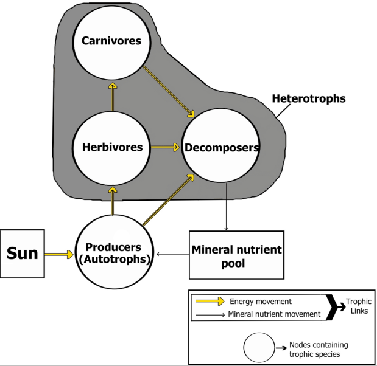
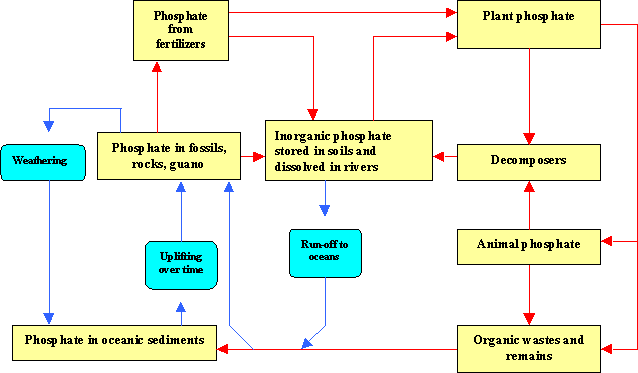
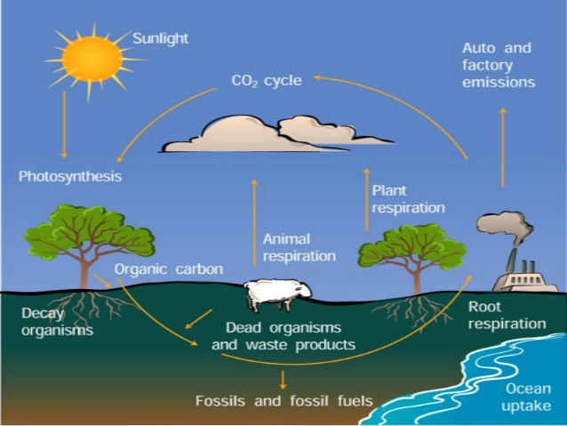
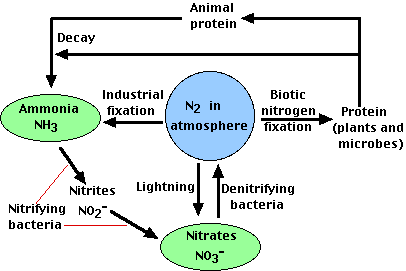
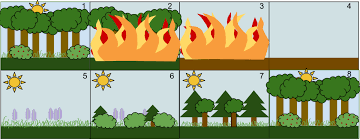

Nutrient cycle (or ecological recycling) is the movement and exchange of organic and inorganic matter back into the production of living matter.
(http://en.wikipedia.org/wiki/Nutrient_cycle)
Generalized model of nutrient cycle: -
All nutrient cycles follow this concept. They differ in only mineral nutrient pool.

Fig. 2.14. Generalized model of nutrient cycles
Phosphorus Cycle: -
Can be explained better with the help of the diagrammatic picture below.

Fig. 2.15. Phosphorus Cycle
Carbon Cycle: -
Can be explained better with the help of the diagrammatic picture below.

Fig. 2.16. Carbon Cycle
Nitrogen Cycle: -
Can be explained better with the help of the diagrammatic picture below.

Fig. 2.17. Nitrogen Cycle
Hydrological Cycle: -
Can be explained better with the help of the diagrammatic picture below. /image image5
Fig. 2.18. Hydrological Cycle
Law of Tolerance: -
Earth's ecosystems are affected by both biotic (living) and abiotic (non-living) factors, and are regulated by the law of tolerance. The law of tolerance states that the existence, abundance and distribution of species depend on the tolerance level of each species to physical and chemical factors. An ecological principle closely related to the law of tolerance is the limiting factor principle. A limiting factor is any abiotic factor that limits or prevents the growth of a population. Limiting factors in terrestrial ecosystems may include the level of soil nutrients, amount of water, light and temperature. In aquatic ecosystems, major limiting factors include pH, the amount of dissolved oxygen in the water and salinity.
Law of Tolerance is a principle developed by American zoologist Victor Ernest Shelford in 1911.
(http://en.wikipedia.org/wiki/Shelford's_Law_of_Tolerance)
Man’s intervention: -
Man’s intervention is a main hindrance to the fluent flow of these cycles. Man is exploiting all the natural resources. Man is misusing and overusing them. Man is polluting them. In this way, the organisms do not get the amount of nutrients they actually need. Man is dominates the shelter places of the organisms and makes them unable to survive. Man is snatching away their natural habitat. Many species are already extinct and many are on a verge of extinction.
Deforestation, Pollution, Hunting, Poaching, Mining are all examples off man’s intervention to the natural resources (habitats).
Pollution as disruption of these cycles: -
Pollution contaminates all the natural resources. In this way every entity related to a resource is polluted. The basic entities of biological cycles – carbon, phosphorus, water, nitrogen – become contaminated and thus they are not transferred from one form to another in their usual forms and thus biomagnification takes place.
Ecosystem as a source of material and sink waste for human societies: -
Ecosystem is a source of all types of basic entities for humans. But now, they are also being used as sink wastes for us. We are exploiting and polluting these resources and thus reducing our own opportunities. The waste which human societies produce is being dumped openly. This disturbs the whole ecosystem. Animals lose their natural habitat. Plants dry up because the nutrients which they receive are already polluted / unavailable.
Ecological Succession: -
Ecological succession is the observed process of change in the species structure of an ecological community over time. The community begins with relatively few pioneering plants and animals and develops through increasing complexity until it becomes stable or self-perpetuating as a climax community.
In easy words,
Ecological succession is the gradual process by which ecosystems change and develop over time. Nothing remains the same and habitats are constantly changing.
(http://en.wikipedia.org/wiki/Ecological_succession)
(http://www.countrysideinfo.co.uk/successn/intro.htm)
There are two types of ecological successions: -
1. Primary Succession: -
Successional dynamics beginning with colonization of an area that has not been previously occupied by an ecological community, such as newly exposed rock or sand surfaces, lava flows, newly exposed glacial tills, etc., are referred to as primary succession.
Primary succession is one of two types of biological and ecological succession of plant life, occurring in an environment in which new substrate devoid of vegetation and usually lacking soil, such as a lava flow or area left from retreated glacier, is deposited. In other words, it is the gradual growth of an ecosystem over a longer period.
(http://en.wikipedia.org/wiki/Primary_succession)
2. Secondary Succession: -
Successional dynamics following severe disturbance or removal of a pre-existing community are called secondary succession. Dynamics in secondary succession are strongly influenced by pre-disturbance conditions, including soil development, seed banks, remaining organic matter, and residual living organisms.
Secondary succession is one of the two types of ecological succession of plant life. As opposed to the first, primary succession, secondary succession is a process started by an event (e.g. forest fire, harvesting, hurricane) that reduces an already established ecosystem (e.g. a forest or a wheat field) to a smaller population of species, and as such secondary succession occurs on preexisting soil whereas primary succession usually occurs in a place lacking soil.
(http://en.wikipedia.org/wiki/Secondary_succession)
Causes of plant succession: -
Plant successions are of two types – autogenic and allogenic succession.
• Autogenic succession can be brought by changes in the soil caused by the organisms there. These changes include accumulation of organic matter in litter or humic layer, alteration of soil nutrients, change in pH of soil by plants growing there.
• Allogenic succession is caused by external environmental influences and not by the vegetation. For example soil changes due to erosion, leaching or the deposition of silt and clays can alter the nutrient content and water relationships in the ecosystems. Animals also play an important role in allogenic changes as they are pollinators, seed dispersers and herbivores.
(http://en.wikipedia.org/wiki/Ecological_succession)
Patterns / Stages of Ecological Succession: -
The patterns of succession are relatively predictable in most areas. Grasses always move in first, followed by a series of vegetation which eventually leads to the "climax forest". Any particular region has its own set of climax [climax- the end stage of a succession] species, which are the plants that are best adapted for the area and will persist after succession has finished, until another disturbance clears the area.

Fig. 2.19. Stages of plant succession
This is an example of Secondary Succession by stages:
1. A stable deciduous forest community
2. A disturbance, such as a wild fire, destroys the forest
3. The fire burns the forest to the ground
4. The fire leaves behind empty, but not destroyed, soil
5. Grasses and other herbaceous plants grow back first
6. Small bushes and trees begin to colonize the area
7. Fast growing evergreen trees develop to their fullest, while shade-tolerant trees develop in the understory
8. The short-lived and shade intolerant evergreen trees die as the larger deciduous trees overtop them. The ecosystem is now back to a similar state to where it began.
(http://en.wikipedia.org/wiki/File:Secondary_Succession.png)